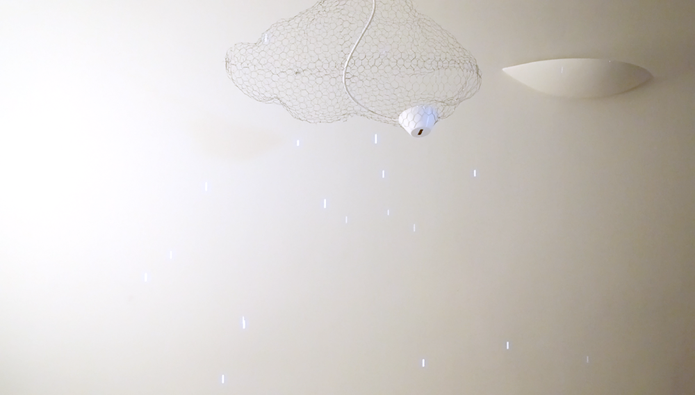
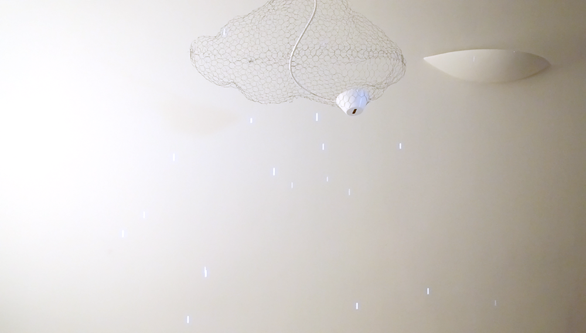
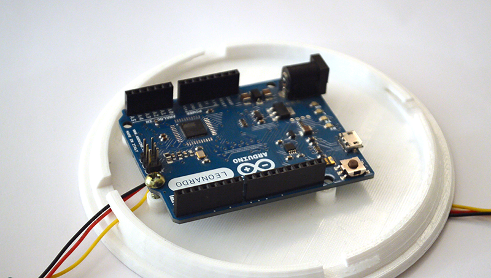
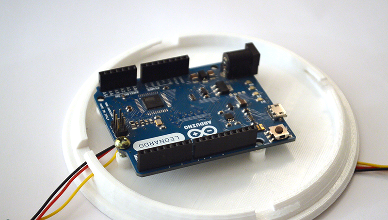

Cloudi is an interactive HCI project I worked on as part of the course
Introduction to HCI.
The project was to apply HCI theories while creating an interactive exhibit.
Gestures recognition / Rhinoceros 3d Modelling / Parametric design / Arduino / Processing

Introduction to HCI.
The project was to apply HCI theories while creating an interactive exhibit.
Gestures recognition / Rhinoceros 3d Modelling / Parametric design / Arduino / Processing

 
